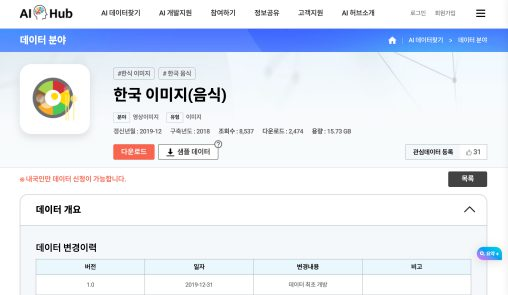
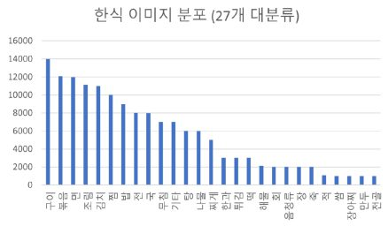
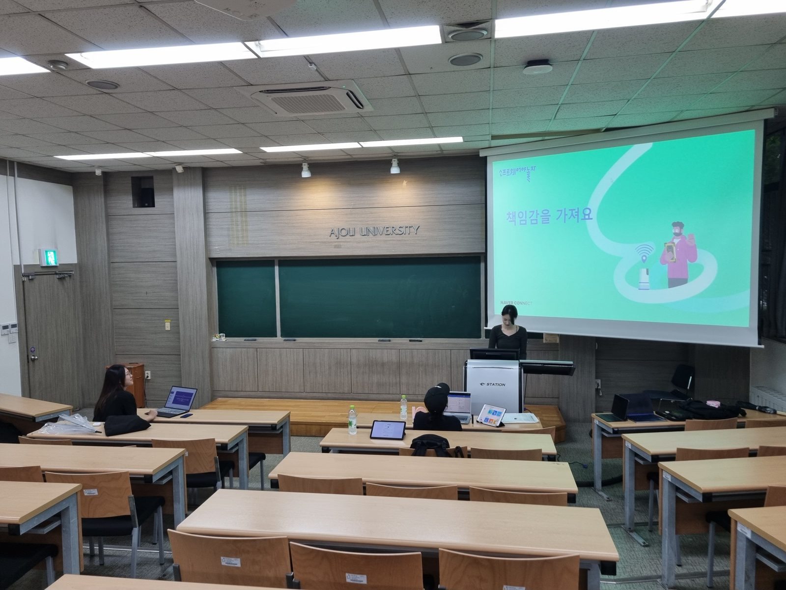
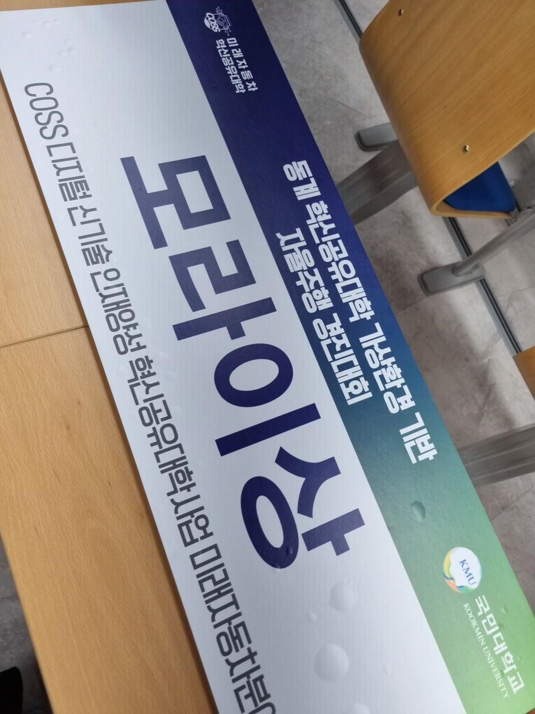
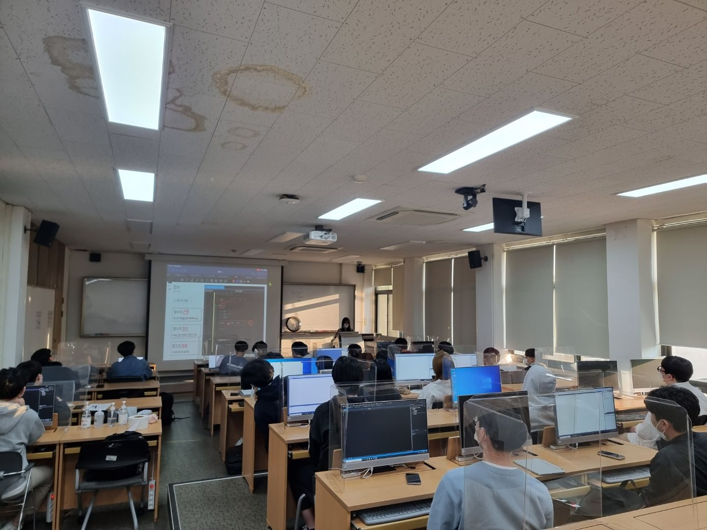
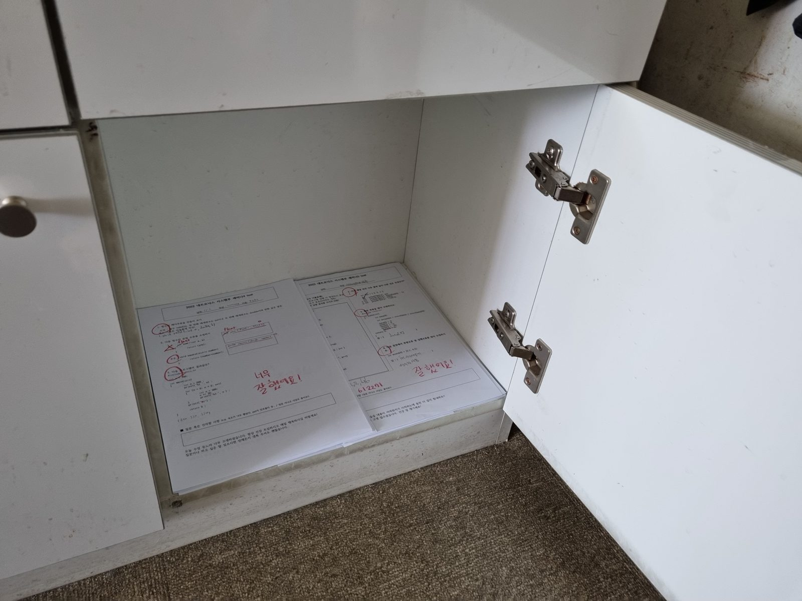
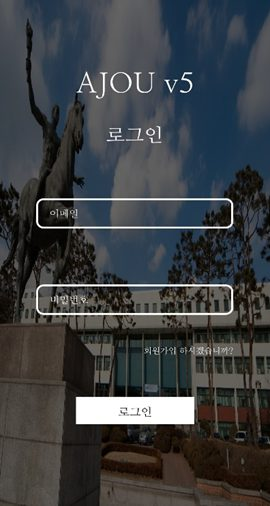
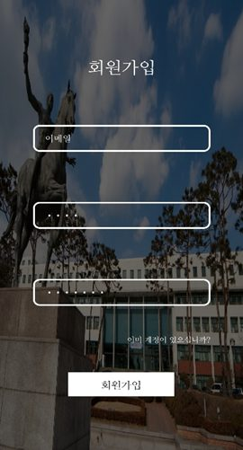
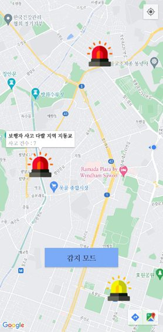
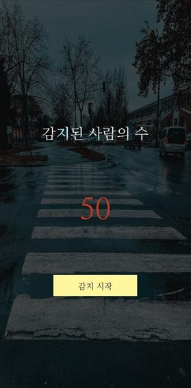

2025.03 — Present
M.S. Researcher · Media System Lab, SKKU
Source-Free 및 Test-Time Adaptation을 중심으로 동적 환경에서의 모델 강건성을 연구합니다. 성균관대학교–삼성서울병원 공동 프로젝트에 참여하고 있습니다.
RESEARCH IN

안녕하세요,
변화하는 실제 환경에서도 신뢰할 수 있는 컴퓨터 비전 시스템을 연구합니다.
성균관대학교 전자전기컴퓨터공학과 석사과정에서 Test-Time Adaptation과 Source-Free Domain Adaptation을 중심으로 모델 강건성을 연구하고 있습니다. 학습 데이터에 다시 접근하기 어려운 상황에서도 모델이 새로운 환경에 적응하는 방법에 관심이 있습니다.
RESEARCH OUTPUT
ACCV 2026 · Under Review
시각 손상과 텍스트 손상이 동시에 발생하는 환경에서 MAC-TTA를 제안하고, 정확도를 40.90%에서 58.68%로 회복했습니다.
VLMTest-Time AdaptationIEEE ICASSP 2026 · pp. 3036–3040
CLIP 기반 하이브리드 증류와 조건부 앙상블을 통해 Waterbirds-shift 정확도를 32.38%에서 76.61%로 향상했습니다.
[Paper] Concept BottleneckIEEE ICCE-Asia 2025 · pp. 476–480
양방향 특징 스캔과 학습 가능한 게이트를 적용하여 CIFAR10-C Gaussian noise 정확도를 74.64%에서 79.90%로 개선했습니다.
[Paper] Corruption RobustnessIEEE ITC-CSCC 2025 · pp. 1205–1208
ConvGRU 병목을 Mamba로 교체해 KITTI의 오차를 낮추면서 파라미터 32.65%, FLOPs 22.88%를 절감했습니다.
[Paper] Optical Flow한국컴퓨터종합학술대회 KCC 2024 · pp. 2245–2247
실제 결절을 분할·합성한 740장의 학습 데이터를 구축하여 YOLOv8 검출 민감도를 86.47%에서 92.01%로 높였습니다.
Medical AISAMRESEARCH & PROJECTS
Source-Free 및 Test-Time Adaptation을 중심으로 동적 환경에서의 모델 강건성을 연구합니다. 성균관대학교–삼성서울병원 공동 프로젝트에 참여하고 있습니다.
ITRC 연구 과제에서 흉부 X-ray 기반 폐 결절 검출과 의료 영상 데이터 증강을 연구했습니다.
UNIVERSITY ACTIVITIES
↓ 주요 활동을 최신순으로 정렬했습니다. 각 카드를 클릭하면 주요 활동 내용 및 기간, 역할 등을 알 수 있습니다.
RECOGNITION
GET IN TOUCH


2023 데이터 크리에이터 캠프는 K-ICT 빅데이터 센터에서 주관하는 사업으로 고등부, 대학생 대상 멘토링 해커톤이다. 또한 미래세대의 데이터 분석 저변 확대와 창의력 증진을 위한 교육 + 멘토링 중심의 데이터 인재 육성 및 선발 프로그램이다.


1-1. 각 메뉴를 클래스로 하는 분류 데이터셋과 데이터로더를 준비하고 예시 이미지를 클래스별로 하나씩 총 42장을 한번에 시각화(plotting)하여 확인한다.
1-2. ResNet18를 활용하여 42종의 클래스 분류를 수행하고 Validation 데이터에 대한 정확도를 제시한다.
mission 1에 대한 코드를 전부 작성.
데이터를 폴더로 관리하여 datasets.ImageFolder로 간편히 데이터를 불러올 수 있도록 함.
모델은 대회 측에서 명시한 대로 Resnet18을 사용해 학습을 진행.
2-1. Mission 1의 결과를 분석한다.
● Mission 1에서 맞춘 샘플의 공통점이 있는가?
● 틀린 샘플들의 공통점이 있는가?
● 맞춘/틀린 샘플들의 차이점이 있는가?
2-2. 2-1의 분석을 기반으로 성능 향상을 위한 작업을 수행한다.
● 아키텍처(architecture) 변경: ResNet18,34,50 등
● LR scheduling, augmentation, regularization 등
2-3. 선택지들의 성능 경향을 파악한다.
● 어떤 논리/기대를 가지고 어떤 수행을 했나?
● 그에 따라 정확도는 어떻게 변했는가?
● 논리/기대와 결과가 같은가? 다른가? 왜 그런 결과가 나왔는가?
mission 2에서는 confusion matrix를 이용한 학습 결과 분석 및 augmentation 역할을 수행.
augmentation으로는 albumentation을 이용하여 데이터를 증강.

AI 기술은 미래의 다양한 직업 분야에서 필요한 핵심 기술로, 교육을 통해 AI에 대한 이해도와 관련 직업에 대한 흥미를 키우고, 문제 해결 능력과 창의적 사고 능력이 발전되도록 돕고 싶었다.
또한, 팀원 모두가 스크래치와 엔트리와 같은 시각적 프로그래밍 도구를 사용해 본 경험이 있으며, 초등학생들에게 AI 개념을 쉽고 재미있게 전달하는 능력을 갖추고 있다고 생각하였다.

초등학교 1-2학년 학생들을 위한 인공지능 수업 시연을 진행하였다.
초등학교 저학년 학생들이 쉽게 이해할 수 있도록 단어 선택에 신경을 쓰고, 자료를 조사하면서 초등학생의 눈높이로 생각하려고 노력했다. 학생들의 흥미를 유발하기 위해 45분 수업 시간 동안 개념설명(10분) - 학습활동(30분) - 요약정리(5분)으로 설정했다.
각각 4교시, 이틀에 거쳐 실제 수업을 진행하였다.
아직 초등학생들은 스크래치 등의 코딩 활동을 할 수 없기 때문에 ‘언플러그드 활동’으로 수업을 진행하였다.
unplugged : (of an electrical device) disconnected.
언플러그드 활동이란 컴퓨터가 필요없이 놀이 중심으로 컴퓨터 과학을 이해하는 활동이다. 학생들이 프로그래밍 언어에 구속받지 않고, 어려운 내용을 체험을 통해 적극적인 태도로 학습할 수 있다.
대표적인 활동으로는 손글씨로 적힌 숫자 카드를 이용하여 숫자 인식 모델 학습시키기와 자율주행 자동차의 양면성에 대해 토론하고, 윤리적인 인공지능을 그려보기 등이 있었다.
인공지능이 무엇인가에 대한 설명을 하는 것도 중요하다고 생각했지만, 인공지능의 편향성과 악용가능성에 대해도 설명하여 학생들에게 경각심을 일깨워주기도 하였다.
초등학교 저학년 아이들을 수업에 따라오게 하도록 지도하는데 많은 어려움이 있었으나, 설문조사를 할 때 수업이 매우 만족스러웠다는 아이들을 보니 뿌듯함을 느꼈다. 마지막 날에는 겨울방학에 또 와야 한다며 우는 아이도 있어서, 뭉클했고 수업이 아이들에게 도움이 많이 된 것 같아서 기뻤다.
다음에도 이러한 교육봉사를 할 수 있는 기회가 생긴다면 기꺼이 참가하고 싶다.

2022년 동계 혁신공유대학 가상환경 기반 자율주행 경진대회

대회의 목표는 가상환경 Linux와 ROS(Robot Operating System)의 운영체제를 이용하여, 모라이 시뮬레이션(Morai Simulator)에서 자율주행 자동차 미션을 수행하는 것이다.
미션으로는 기본적인 주행, 랜덤하게 변하는 신호등 신호에 맞추는 미션, 동적 장애물을 피하는 미션, 정적 장애물을 피하는 미션, 차량 충돌없이 로터리 통과 미션, 라바콘 장애물을 피하는 미션 등이 있었다.
#! /usr/bin/env python
from matplotlib import offsetbox
from numpy import histogram
import rospy
from std_msgs.msg import Float64
from sensor_msgs.msg import CompressedImage
from cv_bridge import CvBridge
import cv2
import numpy as np
from math import *
import matplotlib.pyplot as plt
from time import *
bridge = CvBridge()
def window_search(binary_warped):
bottom_half_y = binary_warped.shape[0]/2
histogram = np.sum(binary_warped[int(bottom_half_y):,:], axis=0) #
midpoint = np.int(histogram.shape[0]/2)
leftx_base = np.argmax(histogram[:midpoint]) #
rightx_base = np.argmax(histogram[midpoint:]) + midpoint
leftx_current = leftx_base
rightx_current = rightx_base
binary_warped = binary_warped*255
out_img = np.dstack((binary_warped, binary_warped, binary_warped))*255
nwindows = 10
window_height = np.int(binary_warped.shape[0]/nwindows)
margin = 100
minpix = 30
lanepixel = binary_warped.nonzero()
lanepixel_y = np.array(lanepixel[0])
lanepixel_x = np.array(lanepixel[1])
left_lane_idx = []
right_lane_idx = []
for window in range(nwindows):
win_y_low = binary_warped.shape[0] - (window+1)*window_height
win_y_high = binary_warped.shape[0] - window*window_height
win_xleft_low = leftx_current - margin
win_xleft_high = leftx_current + margin
win_xright_low = rightx_current - margin
win_xright_high = rightx_current + margin
cv2.rectangle (out_img,(win_xleft_low, win_y_low), (win_xleft_high, win_y_high), (0,255,0), 2)
cv2.rectangle (out_img,(win_xright_low, win_y_low), (win_xright_high, win_y_high), (0,255,0), 2)
good_left_idx = ((lanepixel_y >= win_y_low) & (lanepixel_y < win_y_high) & (lanepixel_x >= win_xleft_low) & (lanepixel_x < win_xleft_high))
good_right_idx = ((lanepixel_y >= win_y_low) & (lanepixel_y < win_y_high) & (lanepixel_x >= win_xright_low) & (lanepixel_x < win_xright_high))
left_lane_idx.append(good_left_idx)
right_lane_idx.append(good_right_idx)
if len(good_left_idx) > minpix:
leftx_current = np.int(np.mean(lanepixel_x[good_left_idx]))
if len(good_right_idx) > minpix:
rightx_current = np.int(np.mean(lanepixel_x[good_right_idx]))
left_lane_idx = np.concatenate(left_lane_idx)
right_lane_idx = np.concatenate(right_lane_idx)
leftx = lanepixel_x[left_lane_idx]
lefty = lanepixel_y[left_lane_idx]
rightx = lanepixel_x[right_lane_idx]
righty = lanepixel_y[right_lane_idx]
left_fit = np.polyfit(lefty, leftx, 2)
right_fit = np.polyfit(righty, rightx, 2)
xm_per_pix = 0.001
ym_per_pix = 0.001
y_eval = 480
left_fit_cr = np.polyfit(lefty * ym_per_pix, leftx * xm_per_pix, 2)
right_fit_cr = np.polyfit(lefty * ym_per_pix, leftx * xm_per_pix, 2)
left_curverad = ((1 + (2 * left_fit_cr[0] * y_eval * ym_per_pix + left_fit_cr[1]) ** 2) ** 1.5) / np.absolute(2 * left_fit_cr[0])
right_curverad = ((1 + (2 * right_fit_cr[0] * y_eval * ym_per_pix + right_fit_cr[1]) ** 2) ** 1.5) / np.absolute(2 * right_fit_cr[0])
ploty = np.linspace(0, binary_warped.shape[0]-1, 3)
left_fitx = left_fit[0] * ploty**2 + left_fit[1] * ploty + left_fit[2]
right_fitx = right_fit[0] * ploty**2 + right_fit[1] * ploty + right_fit[2]
center_fitx = (left_fitx + right_fitx) / 2
center = np.asarray(tuple(zip(center_fitx, ploty)), np.int32)
right = np.asarray(tuple(zip(right_fitx, ploty)), np.int32)
left = np.assarray(tuple(zip(left_fitx, ploty)), np.int32)
cv2.polylines(out_img, [center], False, (0, 255, 255), thickness=5)
return left, right, center, leftx, lefty, rightx, righty, out_img, left_curverad, right_curverad
def CV(msg):
np_arr = np.fromstring(msg.data, np.unit8)
img_bgr = cv2.imdecode(np_arr, cv2.IMREAD_COLOR)
img_HSV = cv2.cvtColor(img_bgr, cv2.COLOR_BGR2HSV)
center_offset = 60
boundary_offset = 200
size = (img_bgr.shape[1], img_bgr.shape[0])
blue = (255, 0, 0)
green = (0, 255, 0)
red = (0, 0, 255)
yellow = (0, 255, 255)
src_point1 = (100, size[1])
src_point2 = (size[0]/2 - center_offset, int((size[1]/2)+10))
src_point3 = (size[0]/2 + center_offset, int((size[1]/2)+10))
src_point4 = (size[0] - 100, size[1])
src_points = np.float32(np.array([src_point1, src_point2, src_point3, src_point4]))
dst_point1 = (400, 1000)
dst_point2 = (200, 0)
dst_point3 = (800, 0)
dst_point4 = (600, 1000)
dst_points = np.float32(np.array([dst_point1, dst_point2, dst_point3, dst_point4]))
cv2.circle(img_bgr, src_point1, 10, blue, -1)
cv2.circle(img_bgr, src_point2, 10, green, -1)
cv2.circle(img_bgr, src_point3, 10, red, -1)
cv2.circle(img_bgr, src_point4, 10, yellow, -1)
matrix = cv2.getPerspectiveTransform(src_points, dst_points)
yellow_lower = np.array([15, 100, 127])
yellow_upper = np.array([45, 255, 255])
yellow_mask = cv2.inRange(img_HSV, yellow_lower, yellow_upper)
yellow_calc = cv2.bitwise_and(img_HSV, img_HSV, mask = yellow_mask)
white_lower = np.array([0, 0, 200])
white_upper = np.array([255, 127, 255])
white_mask = cv2.inRange(img_HSV, white_lower, white_upper)
white_calc = cv2.bitwise_and(img_HSV, img_HSV, mask = white_mask)
yellow_white = cv2.bitwise_or(yellow_calc, white_calc)
warp = cv2.warpPerspective(yellow_calc, white_calc)
warp_GRAY = cv2.cvtColor(warp, cv2.COLOR_BGR2HSV)
_,warp_binary = cv2.threshold(warp_GRAY, 0, 255, cv2.THRESH_BINARY)
left, right, center, leftx, lefty, rightx, righty, out_img, left_curverad, right_curverad = window_search(warp_binary)
steering_rad = (atan(left_curverad) + atan(right_curverad)) / 2
steering_degree = steering_rad * 180 / pi
steering = int(-steering_degree + 90) * 0.3
if center[0][0] < 500:
steering = -steering
print("steering", steering)
offset = 19.4799995422
steer = (steering + offset) / (offset * 2)
speed = 1170
pub1.publish(speed)
pub2.publish(steer)
print("pub steer :", steer)
cv2.nameWindow('out_img', cv2.WINDOW_NORMAL)
cv2.imshow("out_img", out_img)
cv2.waitKey(1)
rospy.init_node('vision')
sub = rospy.Subscriber('/image_jpeg/compressed', CompressedImage, callback = CV)
pub1 = rospy.Publisher('/commands/motor/speed', Float64, queue_size = 1)
pub2 = rospy.Publisher('/commands/servo/position', Float64, queue_size = 1)
rospy.spin()
Sliding Window : window가 이미지 위를 일정한 규칙에 따라 이동하는 이미지 처리 기법
gray scale로 변환된 카메라 영상에서 흰색 차선을 인식하는 함수이다.
sliding 기법을 이용하여 차선에 속하는 픽셀을 찾고, 차선의 곡률을 계산한다.
주로 이미지를 처리하는 콜백 함수이다.
카메라는 차량의 앞에 부착되어 있어 차선이 휘어져서 보인다. 따라서 image warping을 시킨 뒤 grayscale로 변환하여 차선을 명확하게 구분할 수 있게 한다.
또한 노란색과 흰색 차선을 구분하기 위한 색 범위도 지정하고, 범위에 해당하는 픽셀에만 마스크를 만든다. 따라서 노란색, 흰색 차선이 추출될 수 있도록 한다.
import rospy
from morai_msgs.msg import GetTrafficLightStatus
from std_msgs.msg import Header
header = Header()
trafficLightIndex = ""
trafficLightType = 0
trafficLightStatus = 0
# rospy.loginfo(1)
def __setTrafficLight(res): # type: (GetTrafficLightStatus) -> None
global header, trafficLightIndex, trafficLightType, trafficLightStatus
header = res.header
trafficLightIndex = res.trafficLightIndex
trafficLightType = res.trafficLightType
trafficLightStatus = res.trafficLightStatus
rospy.loginfo(trafficLightStatus)
def isGreen():
global trafficLightStatus
return trafficLightStatus == 16
rospy.Subscriber("/GetTrafficLightStatus", GetTrafficLightStatus, __setTrafficLight)
# rospy.spin()ROS Topic을 이용하여 morai simulator에서 publish 하는 신호등의 정보를 읽어온다. 신호등의 상태에 따라, 조건문을 통해 차량의 운행을 제어했다.
import pandas as pd
import numpy as np
import cv2
# from . import LaneMap
pt = []
SIM_WIDTH, SIM_HEIGHT = 40, 12
SIM_MAX_X, SIM_MAX_Y = SIM_WIDTH / 2, SIM_HEIGHT / 2
SIM_MIN_X, SIM_MIN_Y = -SIM_WIDTH / 2, -SIM_HEIGHT / 2
file = '/home/pc-16/AjouBRBR/src/wecar_ros/mapimg/bwMap.png'
MAP = cv2.imread(file, cv2.IMREAD_GRAYSCALE) # type: np.ndarray
IMG_HEIGHT, IMG_WIDTH = MAP.shape[:2]
IMG_MAX_X, IMG_MAX_Y = IMG_WIDTH, IMG_HEIGHT
IMG_MIN_X, IMG_MIN_Y = 0.0, 0.0
IMG_CENTER_X, IMG_CENTER_Y = int(IMG_WIDTH / 2), int(IMG_HEIGHT / 2)
SCALE_FACTOR = IMG_WIDTH / SIM_WIDTH # IMG_WIDTH / SIM_WIDTH == IMG_HEIGHT / SIM_HEIGHT
def inImgRange(x, y):
if x == None or y == None:
return False
return IMG_MIN_X <= x < IMG_MAX_X and IMG_MIN_Y <= y < IMG_MAX_Y
def convertPointImg2Sim(
x, y
): # type: (float, float) -> Tuple[float, float] | Tuple[None, None]
if not inImgRange(x, y):
return None, None
scaledX, scaledY = x / SCALE_FACTOR, y / SCALE_FACTOR
return SIM_MIN_X + scaledX, SIM_MAX_Y - scaledY
def on_mouse(event, x, y, flags, param):
if event == cv2.EVENT_LBUTTONDOWN: #
oldx, oldy = x, y #
print('EVENT_LBUTTONDOWN: %d, %d' % (x, y)) #
x, y = convertPointImg2Sim(x, y)
pt.append([x, y])
cv2.imshow('image', MAP)
cv2.setMouseCallback('image', on_mouse, MAP)
cv2.waitKey()
print(pt)
pt_np = np.array(pt)
print(pt_np[:, 0])
spl, myu = splprep([pt_np[:, 0], pt_np[:, 1]], k = 4)
x1 = np.linspace(-20, 20, 1000)
xnew,ynew= splev(np.linspace(0,1,40), spl)
result = np.dstack((xnew, ynew))
result = np.squeeze(result)
print(result)
data = pd.DataFrame(result)
print(data)
data.to_csv('Lane.txt', index = None)
plt.figure(figsize=(16, 5))
plt.xlim(-20, 20)
plt.ylim(-6, 6)
plt.plot(xnew, ynew, 'bo')
plt.plot(pt_np[:, 0], pt_np[:, 1], 'ro')
plt.show()자율 주행을 위해서는 Map 기능을 이용하여 현재 위치와 목적지를 파악하고 이동하는 것이 중요하다. 대회의 코스대로 주행하기 위해 좌표값을 받아와서 현재 위치와(x, y) mapping한 값 중 가장 가까운 곳으로 이동하게 만들었다.
Interpolation : 두 점 사이의 missing 값을 추정하는 것
또한, mapping은 scipy에서 제공하는 함수 splprep를 이용하여, 맵 이미지에 점을 찍으면 점과 점 사이에 5개를 interpolation 해주는 interpolarion.py를 제작하였다. splprep의 k를 3으로 설정하면 많이 사용하는 점과 점 사이를 3차 다항식으로 연결해주는 Cubic Spline Interpolation이다. 더 매끄럽게 좌표를 연결하기 위해 k = 4로 설정하여 4차 다항식으로 표현하였다.

동계 혁신공유대학 가상환경 기반 자율주행 경진대회에서 모라이상을 수상하였다.

화물차 차량 사고 방지 어플리케이션(AJOUv5)
라즈베리파이 기반으로 자동차와 타 객체(인간 등)를 인식하여 사고가 났을 경우, 해당 장면을 포착하여 database에 알려주는 작품.
YOLOv5를 이용하여 객체를 인식하고,객체 간 거리를 계산해 사고가 났을 경우를 판단하여 DB에 사고 장면을 보고한다. 또한 어플리케이션 사용자에게 가까운 교차로에 있는 사람 수를
화면에 띄워주어 회전 시 사고를 미연에 방지할 수 있도록 한다.

로그인 액티비티, 회원가입 액티비티, 지도 액티비티, 감지 액티비티로 구성되어 있다. 로그인 액티비티와 회원가입 액티비티는 firebase-Authentication에서, 지도 액티비티와 감지 액티비티는 firebase-firestore에서 데이터를 받아온다.

신입생들은 프로그래밍 언어를 혼자 학습하는데 어려움을 겪을 거라고 생각해서 신입생들을 대상으로 C언어 세미나를 진행하였다. 세미나는 1주일에 한번씩 대면으로 수업을 진행하고 질문을 받으면서 신입생들의 학업 능력 향상시키기 위해 이루어졌다.
| Aa 이름 | 날짜 |
|---|---|
| OT 및 C프로그램 기초, 식별자, 자료형, 변수 | 2022.03.18 |
| OT 및 C프로그램 기초, 식별자, 자료형, 변수 | 2022.03.21 |
| 형식지정자, 연산자, 형 변환, 변수 | 2022.03.28 |
| 조건문 (if, switch) | 2022.04.04 |
| 함수와 변수 | 2022.05.02 |
| 배열 (기초, 문자 배열, 다차원 배열) | 2022.05.09 |
| 포인터 | 2022.05.23 |
| 문제 풀이 및 복습 | 2022.06.01 |

매주 월요일 마다 1시간 정도 해당 주차의 수업을 진행하고, 적극적인 소통을 위해 3 ~ 4개 정도의 실습을 병행하였다.

학생들이 어려움을 겪은 부분을 파악하여 관련 내용으로 학습 활동지를 만들었다. 제출한 테스트지는 채점과 피드백을 남겨서 다음 시간에 돌려주었다.

처음 앱에 접속하였을 때 보이는 화면이다. 로그인 Activity에서 이메일과 비밀번호를 눌러 로그인을 할 수 있다. firebase에 저장된 회원정보와 비교하여 일치하면 다음 activity로 이동시킨다.
| 함수 이름 | 설명 |
|---|---|
| onCreate() | 어플 실행 후 화면을 구성하는 함수, 회원가입과 같은 버튼 등의 역할 할당 |
| onClick() | 버튼을 눌렀을 때 실행되는 함수, SendUserToNextActivity 함수를 실행 |
| PerforAuth() | 입력받은 이메일과 비밀번호를 firebase-Authentication에 저장된 회원정보와 비교 후 로그인을 진행하는 함수 |
| onComplete() | 로그인이 정상적으로 이루어졌을 때, 확인용 메시지를 띄우는 함수 |
| SendUserToNextActivity() | 다음 Activity로 넘어가는 함수 |
package com.example.real_push;
import androidx.annotation.NonNull;
import androidx.appcompat.app.AppCompatActivity;
import android.app.ProgressDialog;
import android.content.Intent;
import android.os.Bundle;
import android.util.Log;
import android.view.View;
import android.view.WindowManager;
import android.widget.Button;
import android.widget.EditText;
import android.widget.TextView;
import android.widget.Toast;
import com.google.android.gms.tasks.OnCompleteListener;
import com.google.android.gms.tasks.Task;
import com.google.firebase.auth.AuthResult;
import com.google.firebase.auth.FirebaseAuth;
import com.google.firebase.auth.FirebaseUser;
import com.google.firebase.messaging.FirebaseMessaging;
import org.w3c.dom.Text;
public class MainActivity extends AppCompatActivity {
TextView register;
EditText email;
EditText password;
Button button;
String emailExample = "[a-zA-Z0-9._-]+@[a-z]+\\.+[a-z]+";
FirebaseAuth auth;
FirebaseUser user;
ProgressDialog dialog;
@Override
protected void onCreate(Bundle savedInstanceState) {
super.onCreate(savedInstanceState);
setContentView(R.layout.activity_main);
getWindow().setFlags(WindowManager.LayoutParams.FLAG_FULLSCREEN, WindowManager.LayoutParams.FLAG_FULLSCREEN);
register = findViewById(R.id.register);
email = findViewById(R.id.email);
password = findViewById(R.id.password);
button = findViewById(R.id.button);
dialog = new ProgressDialog(this);
auth = FirebaseAuth.getInstance();
user = auth.getCurrentUser();
register.setOnClickListener(new View.OnClickListener() {
@Override
public void onClick(View v) {
startActivity(new Intent(MainActivity.this, MainActivity2.class));
}
});
button.setOnClickListener(new View.OnClickListener() {
@Override
public void onClick(View v) {
PerforAuth();
}
});
}
private void PerforAuth()
{
String e = email.getText().toString();
String p = password.getText().toString();
if (!e.matches(emailExample))
email.setError("올바르지 않은 이메일입니다.");
else if (p.length() < 7 || p.isEmpty())
{
password.setError("올바르지 않은 비밀번호입니다.");
}
else
{
dialog.setTitle("로그인 중");
dialog.show();
auth.signInWithEmailAndPassword(e, p).addOnCompleteListener(new OnCompleteListener<AuthResult>()
{
@Override
public void onComplete(@NonNull Task<AuthResult> task)
{
if (task.isSuccessful()) {
dialog.dismiss();
sendUserToNextActivity();
Toast.makeText(MainActivity.this, "로그인이 완료되었습니다.", Toast.LENGTH_SHORT).show();
} else {
dialog.dismiss();
Toast.makeText(MainActivity.this, "" + task.getException(), Toast.LENGTH_SHORT).show();
}
}
});
}
}
private void sendUserToNextActivity() {
Intent intent = new Intent(MainActivity.this, LocationActivity.class);
intent.setFlags(Intent.FLAG_ACTIVITY_CLEAR_TASK|Intent.FLAG_ACTIVITY_NEW_TASK);
startActivity(intent);
}
}
회원가입 Activity에서는 이메일과 비밀번호로 회원가입을 할 수 있으며, 이에 대한 정보는 firebase에 저장된다. 비밀번호는 사용자에게 보이지 않게 표시되어 두 번 입력 받은 뒤 그 값이 일치할 때 회원가입을 완료시키고 다시 Main Activity로 이동한다.
| 함수 이름 | 설명 |
|---|---|
| onCreate() | 화면을 구성하는 함수, 이미 계정이 있을 때 로그인 화면으로 넘어가는 버튼이나, 회원가입 버튼 등의 역할 할당 |
| onClick() | 버튼을 눌렀을 때 실행되는 함수, SendUserToNextActivity 함수를 실행 |
| PerforAuth() | 입력받은 이메일과 비밀번호를 firebase-Authentication에 회원 정보로 저장하는 함수 |
| onComplete() | 회원가입이 정상적으로 이루어졌을 때, 확인용 메시지를 띄우는 함수 |
| SendUserToNextActivity() | 다음 Activity로 넘어가는 함수 |
package com.example.real_push;
import androidx.annotation.NonNull;
import androidx.appcompat.app.AppCompatActivity;
import android.app.ProgressDialog;
import android.content.Intent;
import android.os.Bundle;
import android.view.View;
import android.view.WindowManager;
import android.widget.Button;
import android.widget.EditText;
import android.widget.TextView;
import android.widget.Toast;
import com.google.android.gms.tasks.OnCompleteListener;
import com.google.android.gms.tasks.Task;
import com.google.firebase.auth.AuthResult;
import com.google.firebase.auth.FirebaseAuth;
import com.google.firebase.auth.FirebaseUser;
public class MainActivity2 extends AppCompatActivity {
EditText email;
EditText password;
EditText passwordCheck;
Button button;
TextView already;
String emailExample = "[a-zA-Z0-9._-]+@[a-z]+\\.+[a-z]+";
FirebaseAuth auth;
FirebaseUser user;
ProgressDialog dialog;
@Override
protected void onCreate(Bundle savedInstanceState) {
super.onCreate(savedInstanceState);
setContentView(R.layout.activity_main2);
getWindow().setFlags(WindowManager.LayoutParams.FLAG_FULLSCREEN,WindowManager.LayoutParams.FLAG_FULLSCREEN);
email = findViewById(R.id.email);
password = findViewById(R.id.password);
passwordCheck = findViewById(R.id.passwordCheck);
button = findViewById(R.id.button);
dialog = new ProgressDialog(this);
auth = FirebaseAuth.getInstance();
user = auth.getCurrentUser();
already = findViewById(R.id.already);
already.setOnClickListener(new View.OnClickListener()
{
@Override
public void onClick(View v) {
startActivity(new Intent(MainActivity2.this, MainActivity.class));
}
});
button.setOnClickListener(new View.OnClickListener() {
@Override
public void onClick(View v)
{
PerforAuth();
}
});
}
private void PerforAuth()
{
String e=email.getText().toString();
String p=password.getText().toString();
String pCheck=passwordCheck.getText().toString();
if (!e.matches(emailExample))
{
email.setError("올바르지 않은 이메일입니다.");
}
else if(p.length()<6 || p.isEmpty())
{
password.setError("올바르지 않은 비밀번호입니다.");
}
else if(!p.equals(pCheck))
{
passwordCheck.setError("비밀번호가 일치하지 않습니다.");
}
else
{
dialog.setTitle("회원가입 중");
dialog.show();
auth.createUserWithEmailAndPassword(e,p).addOnCompleteListener(new OnCompleteListener<AuthResult>() {
@Override
public void onComplete(@NonNull Task<AuthResult> task)
{
if (task.isSuccessful())
{
dialog.dismiss();
sendUserToNextActivity();
Toast.makeText(MainActivity2.this, "회원가입이 완료되었습니다.", Toast.LENGTH_SHORT).show();
}
else
{
dialog.dismiss();
Toast.makeText(MainActivity2.this, ""+task.getException(), Toast.LENGTH_SHORT).show();
}
}
});
}
}
private void sendUserToNextActivity()
{
Intent intent=new Intent(MainActivity2.this,MainActivity.class);
intent.setFlags(Intent.FLAG_ACTIVITY_CLEAR_TASK|Intent.FLAG_ACTIVITY_NEW_TASK);
startActivity(intent);
}
}
로그인을 한 뒤 넘어간 화면이다.
| 함수 이름 | 설명 |
|---|---|
| onCreate() | 화면을 구성하는 함수, 구글 맵 지도를 띄움 |
| onMapReady() | 현재 위치를 불러오는 함수 등을 실행시키는 함수 |
| onComplete() | firestore에 저장된 사고 다발지 역의 좌푯값, 사고 건수 등의 정보를 읽어와 지도 속 마커로 표시 |
// Copyright 2020 Google LLC
//
// Licensed under the Apache License, Version 2.0 (the "License");
// you may not use this file except in compliance with the License.
// You may obtain a copy of the License at
//
// http://www.apache.org/licenses/LICENSE-2.0
//
// Unless required by applicable law or agreed to in writing, software
// distributed under the License is distributed on an "AS IS" BASIS,
// WITHOUT WARRANTIES OR CONDITIONS OF ANY KIND, either express or implied.
// See the License for the specific language governing permissions and
// limitations under the License.cucurrent
package com.example.real_push;
import android.content.DialogInterface;
import android.content.Intent;
import android.content.pm.PackageManager;
import android.location.Location;
import android.os.Build;
import android.os.Bundle;
import android.util.Log;
import android.view.Menu;
import android.view.MenuItem;
import android.view.View;
import android.widget.Button;
import android.widget.FrameLayout;
import android.widget.TextView;
import androidx.annotation.NonNull;
import androidx.annotation.Nullable;
import androidx.appcompat.app.AlertDialog;
import androidx.appcompat.app.AppCompatActivity;
import androidx.core.app.ActivityCompat;
import androidx.core.content.ContextCompat;
import com.google.android.gms.location.FusedLocationProviderClient;
import com.google.android.gms.location.LocationServices;
import com.google.android.gms.maps.CameraUpdateFactory;
import com.google.android.gms.maps.GoogleMap;
import com.google.android.gms.maps.OnMapReadyCallback;
import com.google.android.gms.maps.SupportMapFragment;
import com.google.android.gms.maps.model.BitmapDescriptorFactory;
import com.google.android.gms.maps.model.CameraPosition;
import com.google.android.gms.maps.model.LatLng;
import com.google.android.gms.maps.model.Marker;
import com.google.android.gms.maps.model.MarkerOptions;
import com.google.android.gms.tasks.OnCompleteListener;
import com.google.android.gms.tasks.Task;
import com.google.android.libraries.places.api.Places;
import com.google.android.libraries.places.api.model.Place;
import com.google.android.libraries.places.api.model.PlaceLikelihood;
import com.google.android.libraries.places.api.net.FindCurrentPlaceRequest;
import com.google.android.libraries.places.api.net.FindCurrentPlaceResponse;
import com.google.android.libraries.places.api.net.PlacesClient;
import com.google.firebase.firestore.DocumentReference;
import com.google.firebase.firestore.DocumentSnapshot;
import com.google.firebase.firestore.EventListener;
import com.google.firebase.firestore.FirebaseFirestore;
import com.google.firebase.firestore.FirebaseFirestoreException;
import java.util.Arrays;
import java.util.List;
/**
* An activity that displays a map showing the place at the device's current location.
*/
public class LocationActivity extends AppCompatActivity
implements OnMapReadyCallback {
FirebaseFirestore db;
Button button;
private static final String TAG = LocationActivity.class.getSimpleName();
private GoogleMap map;
private CameraPosition cameraPosition;
// The entry point to the Places API.
private PlacesClient placesClient;
// The entry point to the Fused Location Provider.
private FusedLocationProviderClient fusedLocationProviderClient;
// A default location (Sydney, Australia) and default zoom to use when location permission is
// not granted.
private final LatLng defaultLocation = new LatLng(-33.8523341, 151.2106085);
private static final int DEFAULT_ZOOM = 15;
private static final int PERMISSIONS_REQUEST_ACCESS_FINE_LOCATION = 1;
private boolean locationPermissionGranted;
// The geographical location where the device is currently located. That is, the last-known
// location retrieved by the Fused Location Provider.
private Location lastKnownLocation;
// Keys for storing activity state.
// [START maps_current_place_state_keys]
private static final String KEY_CAMERA_POSITION = "camera_position";
private static final String KEY_LOCATION = "location";
// [END maps_current_place_state_keys]
// Used for selecting the current place.
private static final int M_MAX_ENTRIES = 5;
private String[] likelyPlaceNames;
private String[] likelyPlaceAddresses;
private List[] likelyPlaceAttributions;
private LatLng[] likelyPlaceLatLngs;
public static final String MAPS_API_KEY = "STUB_API_KEY";
// [START maps_current_place_on_create]
@Override
protected void onCreate(Bundle savedInstanceState) {
super.onCreate(savedInstanceState);
// [START_EXCLUDE silent]
// [START maps_current_place_on_create_save_instance_state]
// Retrieve location and camera position from saved instance state.
if (savedInstanceState != null) {
lastKnownLocation = savedInstanceState.getParcelable(KEY_LOCATION);
cameraPosition = savedInstanceState.getParcelable(KEY_CAMERA_POSITION);
}
// [END maps_current_place_on_create_save_instance_state]
// [END_EXCLUDE]
// Retrieve the content view that renders the map.
setContentView(R.layout.activity_maps);
// [START_EXCLUDE silent]
// Construct a PlacesClient
Places.initialize(getApplicationContext(), MAPS_API_KEY);
placesClient = Places.createClient(this);
// Construct a FusedLocationProviderClient.
fusedLocationProviderClient = LocationServices.getFusedLocationProviderClient(this);
// Build the map.
// [START maps_current_place_map_fragment]
SupportMapFragment mapFragment = (SupportMapFragment) getSupportFragmentManager()
.findFragmentById(R.id.map);
mapFragment.getMapAsync(this);
// [END maps_current_place_map_fragment]
// [END_EXCLUDE]
}
// [END maps_current_place_on_create]
/**
* Saves the state of the map when the activity is paused.
*/
// [START maps_current_place_on_save_instance_state]
@Override
protected void onSaveInstanceState(Bundle outState) {
if (map != null) {
outState.putParcelable(KEY_CAMERA_POSITION, map.getCameraPosition());
outState.putParcelable(KEY_LOCATION, lastKnownLocation);
}
super.onSaveInstanceState(outState);
}
// [END maps_current_place_on_save_instance_state]
/**
* Sets up the options menu.
*
* @param menu The options menu.
* @return Boolean.
*/
@Override
public boolean onCreateOptionsMenu(Menu menu) {
getMenuInflater().inflate(R.menu.current_place_menu, menu);
return true;
}
/**
* Handles a click on the menu option to get a place.
*
* @param item The menu item to handle.
* @return Boolean.
*/
// [START maps_current_place_on_options_item_selected]
@Override
public boolean onOptionsItemSelected(MenuItem item) {
if (item.getItemId() == R.id.option_get_place) {
showCurrentPlace();
}
return true;
}
// [END maps_current_place_on_options_item_selected]
/**
* Manipulates the map when it's available.
* This callback is triggered when the map is ready to be used.
*/
// [START maps_current_place_on_map_ready]
@Override
public void onMapReady(GoogleMap map) {
db = FirebaseFirestore.getInstance();
button = findViewById(R.id.button);
button.setOnClickListener(new View.OnClickListener() {
@Override
public void onClick(View v) {
sendUserToNextActivity();
}
private void sendUserToNextActivity() {
Intent intent = new Intent(LocationActivity.this,TrackActivity.class);
intent.setFlags(Intent.FLAG_ACTIVITY_CLEAR_TASK|Intent.FLAG_ACTIVITY_NEW_TASK);
startActivity(intent);
}
});
DocumentReference docRef = db.collection("accident").document("accident1");
docRef.get().addOnCompleteListener(new OnCompleteListener<DocumentSnapshot>() {
private static final String TAG = "checkii";
@Override
public void onComplete(@NonNull Task<DocumentSnapshot> task) {
if (task.isSuccessful()) {
DocumentSnapshot document = task.getResult();
if (document.exists()) {
Log.d(TAG, "DocumentSnapshot data: " + document.getData());
LatLng accident1 = new LatLng(document.getDouble("latitude"), document.getDouble("longitude"));
map.addMarker(new MarkerOptions()
.position(accident1)
.title("보행자 사고 다발 지역 " + document.getString("name"))
.icon(BitmapDescriptorFactory.fromResource(R.drawable.siren1))
.snippet("사고 건수 : " + document.getString("number")));
} else {
Log.d(TAG, "No such document");
}
} else {
Log.d(TAG, "get failed with ", task.getException());
}
}
});
DocumentReference docRef1 = db.collection("accident").document("accident2");
docRef1.get().addOnCompleteListener(new OnCompleteListener<DocumentSnapshot>() {
private static final String TAG = "checkii";
@Override
public void onComplete(@NonNull Task<DocumentSnapshot> task) {
if (task.isSuccessful()) {
DocumentSnapshot document = task.getResult();
if (document.exists()) {
Log.d(TAG, "DocumentSnapshot data: " + document.getData());
LatLng accident1 = new LatLng(document.getDouble("latitude"), document.getDouble("longitude"));
map.addMarker(new MarkerOptions()
.position(accident1)
.title("이륜차 사고 다발 지역 " + document.getString("name"))
.icon(BitmapDescriptorFactory.fromResource(R.drawable.siren2))
.snippet("사고 건수 : " + document.getString("number")));
} else {
Log.d(TAG, "No such document");
}
} else {
Log.d(TAG, "get failed with ", task.getException());
}
}
});
DocumentReference docRef2 = db.collection("accident").document("accident3");
docRef2.get().addOnCompleteListener(new OnCompleteListener<DocumentSnapshot>() {
private static final String TAG = "checkii";
@Override
public void onComplete(@NonNull Task<DocumentSnapshot> task) {
if (task.isSuccessful()) {
DocumentSnapshot document = task.getResult();
if (document.exists()) {
Log.d(TAG, "DocumentSnapshot data: " + document.getData());
LatLng accident1 = new LatLng(document.getDouble("latitude"), document.getDouble("longitude"));
map.addMarker(new MarkerOptions()
.position(accident1)
.title("보행자 사고 다발 지역 " + document.getString("name"))
.icon(BitmapDescriptorFactory.fromResource(R.drawable.siren1))
.snippet("사고 건수 : " + document.getString("number")));
} else {
Log.d(TAG, "No such document");
}
} else {
Log.d(TAG, "get failed with ", task.getException());
}
}
});
this.map = map;
// [START_EXCLUDE]
// [START map_current_place_set_info_window_adapter]
// Use a custom info window adapter to handle multiple lines of text in the
// info window contents.
this.map.setInfoWindowAdapter(new GoogleMap.InfoWindowAdapter() {
@Override
// Return null here, so that getInfoContents() is called next.
public View getInfoWindow(Marker arg0) {
return null;
}
@Override
public View getInfoContents(Marker marker) {
// Inflate the layouts for the info window, title and snippet.
View infoWindow = getLayoutInflater().inflate(R.layout.custom_info_contents,
(FrameLayout) findViewById(R.id.map), false);
TextView title = infoWindow.findViewById(R.id.title);
title.setText(marker.getTitle());
TextView snippet = infoWindow.findViewById(R.id.snippet);
snippet.setText(marker.getSnippet());
return infoWindow;
}
});
// [END map_current_place_set_info_window_adapter]
// Prompt the user for permission.
getLocationPermission();
// [END_EXCLUDE]
// Turn on the My Location layer and the related control on the map.
updateLocationUI();
// Get the current location of the device and set the position of the map.
getDeviceLocation();
}
// [END maps_current_place_on_map_ready]
/**
* Gets the current location of the device, and positions the map's camera.
*/
// [START maps_current_place_get_device_location]
private void getDeviceLocation() {
/*
* Get the best and most recent location of the device, which may be null in rare
* cases when a location is not available.
*/
try {
if (locationPermissionGranted) {
Task<Location> locationResult = fusedLocationProviderClient.getLastLocation();
locationResult.addOnCompleteListener(this, new OnCompleteListener<Location>() {
@Override
public void onComplete(@NonNull Task<Location> task) {
if (task.isSuccessful()) {
// Set the map's camera position to the current location of the device.
lastKnownLocation = task.getResult();
if (lastKnownLocation != null) {
map.moveCamera(CameraUpdateFactory.newLatLngZoom(
new LatLng(lastKnownLocation.getLatitude(),
lastKnownLocation.getLongitude()), DEFAULT_ZOOM));
}
} else {
Log.d(TAG, "Current location is null. Using defaults.");
Log.e(TAG, "Exception: %s", task.getException());
map.moveCamera(CameraUpdateFactory
.newLatLngZoom(defaultLocation, DEFAULT_ZOOM));
map.getUiSettings().setMyLocationButtonEnabled(false);
}
}
});
}
} catch (SecurityException e) {
Log.e("Exception: %s", e.getMessage(), e);
}
}
// [END maps_current_place_get_device_location]
/**
* Prompts the user for permission to use the device location.
*/
// [START maps_current_place_location_permission]
private void getLocationPermission() {
/*
* Request location permission, so that we can get the location of the
* device. The result of the permission request is handled by a callback,
* onRequestPermissionsResult.
*/
if (ContextCompat.checkSelfPermission(this.getApplicationContext(),
android.Manifest.permission.ACCESS_FINE_LOCATION)
== PackageManager.PERMISSION_GRANTED) {
locationPermissionGranted = true;
} else {
ActivityCompat.requestPermissions(this,
new String[]{android.Manifest.permission.ACCESS_FINE_LOCATION},
PERMISSIONS_REQUEST_ACCESS_FINE_LOCATION);
}
}
// [END maps_current_place_location_permission]
/**
* Handles the result of the request for location permissions.
*/
// [START maps_current_place_on_request_permissions_result]
@Override
public void onRequestPermissionsResult(int requestCode,
@NonNull String[] permissions,
@NonNull int[] grantResults) {
locationPermissionGranted = false;
if (requestCode
== PERMISSIONS_REQUEST_ACCESS_FINE_LOCATION) {// If request is cancelled, the result arrays are empty.
if (grantResults.length > 0
&& grantResults[0] == PackageManager.PERMISSION_GRANTED) {
locationPermissionGranted = true;
}
} else {
super.onRequestPermissionsResult(requestCode, permissions, grantResults);
}
updateLocationUI();
}
// [END maps_current_place_on_request_permissions_result]
/**
* Prompts the user to select the current place from a list of likely places, and shows the
* current place on the map - provided the user has granted location permission.
*/
// [START maps_current_place_show_current_place]
private void showCurrentPlace() {
if (map == null) {
return;
}
if (locationPermissionGranted) {
// Use fields to define the data types to return.
List<Place.Field> placeFields = Arrays.asList(Place.Field.NAME, Place.Field.ADDRESS,
Place.Field.LAT_LNG);
// Use the builder to create a FindCurrentPlaceRequest.
FindCurrentPlaceRequest request =
FindCurrentPlaceRequest.newInstance(placeFields);
// Get the likely places - that is, the businesses and other points of interest that
// are the best match for the device's current location.
@SuppressWarnings("MissingPermission") final Task<FindCurrentPlaceResponse> placeResult =
placesClient.findCurrentPlace(request);
placeResult.addOnCompleteListener(new OnCompleteListener<FindCurrentPlaceResponse>() {
@Override
public void onComplete(@NonNull Task<FindCurrentPlaceResponse> task) {
if (task.isSuccessful() && task.getResult() != null) {
FindCurrentPlaceResponse likelyPlaces = task.getResult();
// Set the count, handling cases where less than 5 entries are returned.
int count;
if (likelyPlaces.getPlaceLikelihoods().size() < M_MAX_ENTRIES) {
count = likelyPlaces.getPlaceLikelihoods().size();
} else {
count = M_MAX_ENTRIES;
}
int i = 0;
likelyPlaceNames = new String[count];
likelyPlaceAddresses = new String[count];
likelyPlaceAttributions = new List[count];
likelyPlaceLatLngs = new LatLng[count];
for (PlaceLikelihood placeLikelihood : likelyPlaces.getPlaceLikelihoods()) {
// Build a list of likely places to show the user.
likelyPlaceNames[i] = placeLikelihood.getPlace().getName();
likelyPlaceAddresses[i] = placeLikelihood.getPlace().getAddress();
likelyPlaceAttributions[i] = placeLikelihood.getPlace()
.getAttributions();
likelyPlaceLatLngs[i] = placeLikelihood.getPlace().getLatLng();
i++;
if (i > (count - 1)) {
break;
}
}
// Show a dialog offering the user the list of likely places, and add a
// marker at the selected place.
LocationActivity.this.openPlacesDialog();
} else {
Log.e(TAG, "Exception: %s", task.getException());
}
}
});
} else {
// The user has not granted permission.
Log.i(TAG, "The user did not grant location permission.");
// Add a default marker, because the user hasn't selected a place.
map.addMarker(new MarkerOptions()
.title(getString(R.string.default_info_title))
.position(defaultLocation)
.snippet(getString(R.string.default_info_snippet)));
// Prompt the user for permission.
getLocationPermission();
}
}
// [END maps_current_place_show_current_place]
/**
* Displays a form allowing the user to select a place from a list of likely places.
*/
// [START maps_current_place_open_places_dialog]
private void openPlacesDialog() {
// Ask the user to choose the place where they are now.
DialogInterface.OnClickListener listener = new DialogInterface.OnClickListener() {
@Override
public void onClick(DialogInterface dialog, int which) {
// The "which" argument contains the position of the selected item.
LatLng markerLatLng = likelyPlaceLatLngs[which];
String markerSnippet = likelyPlaceAddresses[which];
if (likelyPlaceAttributions[which] != null) {
markerSnippet = markerSnippet + "\n" + likelyPlaceAttributions[which];
}
// Add a marker for the selected place, with an info window
// showing information about that place.
map.addMarker(new MarkerOptions()
.title(likelyPlaceNames[which])
.position(markerLatLng)
.snippet(markerSnippet));
// Position the map's camera at the location of the marker.
map.moveCamera(CameraUpdateFactory.newLatLngZoom(markerLatLng,
DEFAULT_ZOOM));
}
};
// Display the dialog.
AlertDialog dialog = new AlertDialog.Builder(this)
.setTitle(R.string.pick_place)
.setItems(likelyPlaceNames, listener)
.show();
}
// [END maps_current_place_open_places_dialog]
/**
* Updates the map's UI settings based on whether the user has granted location permission.
*/
// [START maps_current_place_update_location_ui]
private void updateLocationUI() {
if (map == null) {
return;
}
try {
if (locationPermissionGranted) {
map.setMyLocationEnabled(true);
map.getUiSettings().setMyLocationButtonEnabled(true);
} else {
map.setMyLocationEnabled(false);
map.getUiSettings().setMyLocationButtonEnabled(false);
lastKnownLocation = null;
getLocationPermission();
}
} catch (SecurityException e) {
Log.e("Exception: %s", e.getMessage());
}
}
}
// [END maps_current_place_update_location_ui]/Code

‘감지 시작’ 버튼을 누르면 가운데에 숫자가 나타난다. 라즈베리 파이의 카메라로 YOLOv5를 통해 객체를 감지하여 firebase로 저장을 한다. firestore에 저장되는 정보를 실시간으로 불러와서 현재 사각지대에 위치한 사람의 숫자를 띄우는 화면이다.
| 함수 이름 | 설명 |
|---|---|
| onCreate() | 화면을 구성하는 함수, 버튼과 텍스트 등이 보이게 됨 |
| onClick() | 버튼을 눌렀을 때 onEvent 함수 실행 |
| onEvent() | firestore에 올라와 변동되는 사람 수의 정보를 실시간으로 읽어오는 함수 |
Code
package com.example.real_push;
import static androidx.constraintlayout.helper.widget.MotionEffect.TAG;
import androidx.annotation.NonNull;
import androidx.annotation.Nullable;
import androidx.appcompat.app.AppCompatActivity;
import android.annotation.SuppressLint;
import android.app.ProgressDialog;
import android.content.Intent;
import android.os.Bundle;
import android.util.Log;
import android.view.View;
import android.view.WindowManager;
import android.widget.Button;
import android.widget.EditText;
import android.widget.TextView;
import android.widget.Toast;
import com.google.android.gms.tasks.OnCompleteListener;
import com.google.android.gms.tasks.Task;
import com.google.firebase.auth.AuthResult;
import com.google.firebase.auth.FirebaseAuth;
import com.google.firebase.auth.FirebaseUser;
import com.google.firebase.firestore.DocumentReference;
import com.google.firebase.firestore.DocumentSnapshot;
import com.google.firebase.firestore.EventListener;
import com.google.firebase.firestore.FirebaseFirestore;
import com.google.firebase.firestore.FirebaseFirestoreException;
import com.google.firebase.firestore.QueryDocumentSnapshot;
import com.google.firebase.firestore.QuerySnapshot;
import com.google.firebase.messaging.FirebaseMessaging;
import org.w3c.dom.Text;
import java.util.Map;
public class TrackActivity extends AppCompatActivity {
FirebaseAuth auth;
FirebaseFirestore db;
TextView message;
TextView count;
Button button;
TextView test;
@Override
protected void onCreate(Bundle savedInstanceState) {
super.onCreate(savedInstanceState);
setContentView(R.layout.activity_track);
getWindow().setFlags(WindowManager.LayoutParams.FLAG_FULLSCREEN, WindowManager.LayoutParams.FLAG_FULLSCREEN);
auth = FirebaseAuth.getInstance();
button = findViewById(R.id.button);
message = findViewById(R.id.countMessage);
count = findViewById(R.id.count);
test = findViewById(R.id.test);
db = FirebaseFirestore.getInstance();
button.setOnClickListener(new View.OnClickListener() {
@Override
public void onClick(View v) {
final DocumentReference docRef = db.collection("crosswalk").document("accident1");
docRef.addSnapshotListener(new EventListener<DocumentSnapshot>() {
private static final String TAG = "checko";
@Override
public void onEvent(@Nullable DocumentSnapshot snapshot,
@Nullable FirebaseFirestoreException e) {
if (e != null) {
Log.w(TAG, "Listen failed.", e);
return;
}
// String source = snapshot != null && snapshot.getMetadata().hasPendingWrites() ? "Local" : "Server";
if (snapshot != null && snapshot.exists()) {
Log.d(TAG, "data: " + snapshot.getData());
count.setText(snapshot.getData().get("person").toString());
} else {
Log.d(TAG, "data: null");
}
}
});
}
});
}
}